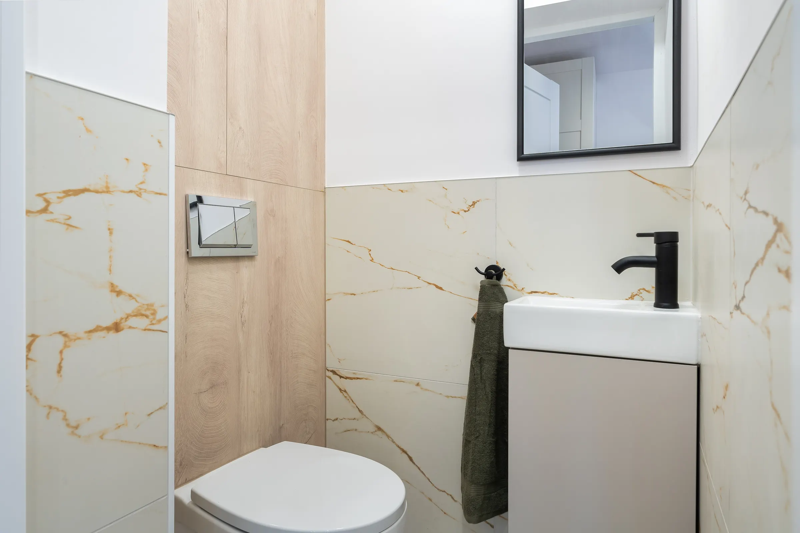
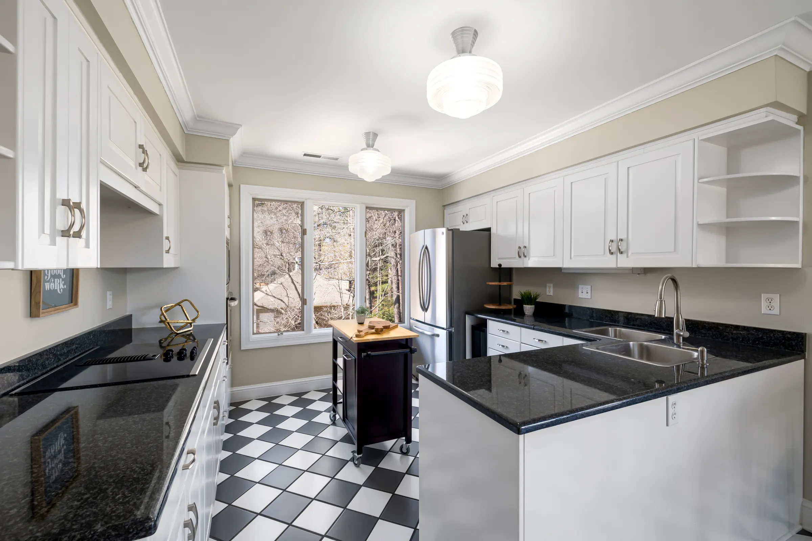
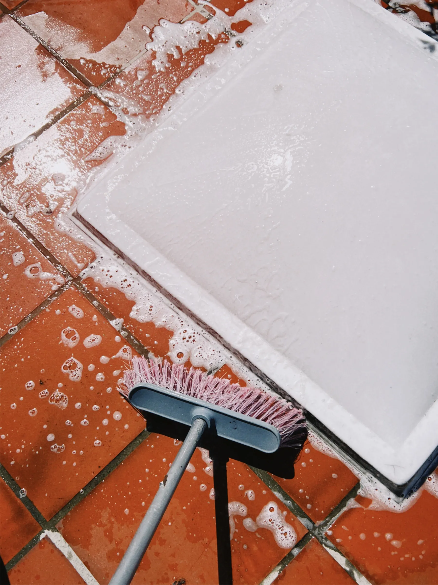

Tile Polishing
Optional offering. Suitability depends on the tile material, finish and condition.
Configurable offering
Care for every tiled surface
From everyday floor cleaning to detailed bathroom and kitchen grout restoration, discover the right cleaning solution for your space.
Discuss your project Tile floor care
Tile floor care01 · Floor care
A considered clean for the tiled floors that see daily use, with the approach guided by the material and its condition.

Bathroom tile care02 · Bathroom care
Detailed care for bathroom tile and grout, including the areas around showers and fixtures.

Kitchen tile care03 · Kitchen care
A practical clean for kitchen floors, where everyday cooking and foot traffic can leave residue on tile and grout.

04 · Detailed grout care
Grout can hold residue differently from the tile around it. We assess its condition and discuss suitable cleaning or restoration options for the surface.
Results depend on grout type, stain, age and condition. Some discoloration or damage may not be reversible; replacement or repair may be more appropriate.
Ask About Grout CareOptions to discuss
Availability can be configured to match the services the business offers. Confirm these options before publishing them as available.
Optional offering. Suitability depends on the tile material, finish and condition.
Configurable offeringOptional offering where available and appropriate for the grout and setting.
Configurable offeringOptional care plans can be defined around the surfaces and service schedule.
Configurable offeringOptional service for businesses, subject to the team’s service area and capacity.
Configurable offeringA clear approach
Each project begins with understanding the surface and what it needs.
Discuss the area, tile material, grout and visible concerns.
Prepare the work area and choose a suitable cleaning approach.
Clean the agreed surfaces with attention to tile and grout detail.
Review the cleaned areas and discuss any care or follow-up options.
Material matters
Tile and grout can respond differently to cleaning. The method should reflect the material, finish, grout type and current condition.
Ask about your surfaceConsider the glaze, grout, and any existing wear or surface damage.
Finish and texture vary; the cleaning approach should suit the specific surface.
Stone types differ in porosity and sensitivity. Confirm material before choosing treatment.
Texture and surface profile affect how soil collects and how it can be reached.
Grout formulation, age and condition help determine suitable cleaning options.
Good to know
Understand the considerations that shape a cleaning plan.
Ask a QuestionNo. Results depend on the stain and grout condition. Some discoloration may remain, and damaged grout can require repair or replacement.
Natural stone varies by type and finish. Identify the stone and its condition first so suitable cleaning options can be discussed.
Grout sealing is an optional, configurable offering. Ask whether it is available and appropriate for your grout.
The tile material, finish, grout type, soil and condition all matter. These details are reviewed before agreeing on an approach.
Cleaning does not repair missing or damaged grout. An assessment can help distinguish cleaning needs from repair or replacement work.
Let’s talk about your surfaces
Share the areas you would like cleaned and we’ll discuss a suitable next step.